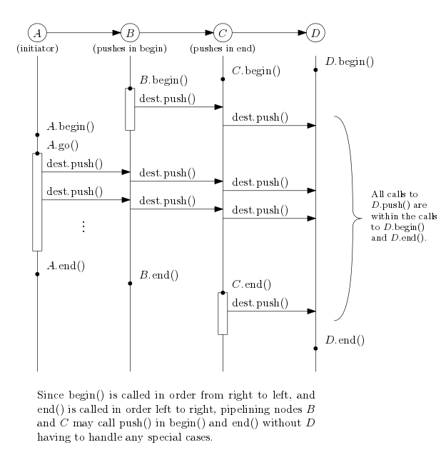
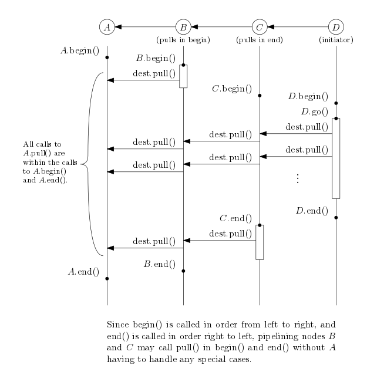
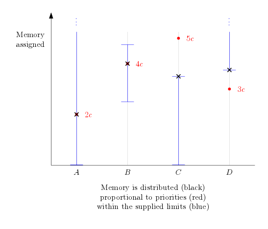

Some algorithms can be expressed in terms of stream sweeps. For instance, the Graham sweep algorithm for computing the convex hull of a set of points will sweep through the input points from left to right, maintaining the upper convex hull and the lower convex hull in a stack of points. Thus, the algorithm consists of four components: reading the input, sorting by x-coordinate, computing the upper and lower hull, and reporting the convex polygon.
The pipelining framework is used to implement such so-called streaming algorithms that process streams of items in this manner. The programmer implements the specialized components needed for the algorithm (computing the upper and lower hull, for instance), and stitches them together with built-ins such as reading, sorting and writing.
In this way, we may test each component individually and reuse them in multiple contexts. Without the TPIE pipelining framework, streaming algorithms are often implemented as monolithic classes with multiple interdependent methods that do not facilitate individual development and testing. Using virtual polymorphism may enable unit testing of components, but the virtual method speed penalty paid per item per operation is too high a price to pay in our case.
What we want instead is a kind of compile-time polymorphism: Implementations of operations that use C++ generic programming to let the programmer mix and match at code time, but have the methods inlined and fused together at compile time. Without an underlying framework, this kind of architecture will lead to a lot of typedefs that are overly verbose and somewhat unmaintainable.
The pipelining framework provides compile-time polymorphism along with high maintainability, high testability and low verbosity.
In TPIE pipelining, a node is any object that implements tpie::pipelining::node. A node processes items of a stream in some fashion, typically by implementing a push() method which processes an item and pushes to a destination node.
The node can implement a begin() and/or an end() method to perform some initialization or finalization. The framework guarantees that begin() and end() are called in an order such that the destination of the node is ready to accept items via push() when begin() and end() are called.

Since the framework computes the topological order of the nodes of the actor graph (that is, using the actor edges as in the above two figures) and the framework requires that the actor graph is acyclic, the nodes may call push(), pull() and can_pull() in both begin() and end() even when push and pull nodes are mixed together.
In code, a pipelining node implementation may look like the following.
A node implementation may supply the following extra information to the framework which is otherwise inferred in the ordinary case.
| tpie::pipelining::node_parameters | |||||
|---|---|---|---|---|---|
| Memory | Name | Progress | |||
Minimum memory_size_type | Maximum memory_size_type | Priority double | Name std::string | Priority int | Total steps stream_size_type |
If the node needs to allocate a buffer in begin() which is deallocated in end(), it can specify the size of this buffer in bytes using a call to set_minimum_memory() in the constructor, in prepare() or in propagate(). If the node can benefit from a larger buffer, it should set a positive memory priority for itself using a call to set_memory_fraction(). If there is a limit to the amount of memory it can use, it should declare this limit using set_maximum_memory(). By default, the minimum memory is zero bytes, and the memory priority is zero, meaning the node is assigned its minimum memory. The default maximum memory is infinity.
If the node has multiple pull sources and/or push destinations, these must be specified using add_push_destination and add_pull_source in the constructor.
In propagate(), begin() and end(), the node may access the amount of memory assigned to it using get_available_memory().
For debugging, each node object has a name, which defaults to a pretty version of the name provided by typeid(*this).name(). The name can be set by a call to set_name() in the constructor.
If the node has multiple overloads of the push() method, it must declare a primary item_type as a public member typedef. Otherwise, the framework uses metaprogramming to discover the type accepted by push().
Here, we restate the above implementation with all the defaults spelled out:
In some applications it might be easier to express the operation in terms of pulling items from a source and returning a processed item. This is the style used by STL iterators, and it is the style preferred by STXXL, another framework which implements pipelining.
In this case, a TPIE pipelining node should implement the two methods pull() and can_pull(). Again, the framework ensures that it is permitted to call pull() and can_pull() in begin() and end().

The implementation details of pull nodes are similar to regular nodes. The following is an example of a simple pull node.
When nodes are used together they form a pipeline. When a pipeline is run, the items from the first node - the iniator node - is pushed through each node and into the last node where they are written disk or processed in some similar fashion. The following is a simple example using the hello_world node and some of the nodes in the pipelining library. Pull pipelines are created the same way, but by using pull nodes only.
Each node has three properties that control how much memory is assigned to it: its minimum memory, its maximum memory and its memory priority. The framework guarantees that the amount of memory assigned to the node is between the minimum and the maximum of the node, and in the absence of memory limits, memory is distributed proportional to the memory priority.

The memory assignment is implemented by a binary search for the parameter c such that the sum of assigned memory is equal to the available memory.
If there is not enough available memory in total to satisfy all minimum memory requirements, a warning is printed to the log and memory overusage can be expected.
Sometimes it is useful to pass metadata between nodes before begin() is called. For this purpose, the TPIE pipelining framework lets nodes call can_fetch(), fetch() and forward() in the methods prepare() and propagate().
Each piece of metadata is identified by a string, and can_fetch should be called before fetch to ensure that the metadata has actually been forwarded.
The method fetch takes a required template parameter which is the type of data to fetch. Internally, metadata is stored using any_noncopyable, and the method fetch_any fetches metadata just like fetch, except it returns the any_noncopyable object directly without using any_cast. An optional third argument k may be passed as well. This determines the maximum distance that the item should be forwarded. This lets the framework avoid doing extra work if the data is only needed in the next few nodes.
Using forward, a node may forward metadata to its successors in the item flow graph. That is, metadata is sent from item sources to item sinks; this is the actor order in push pipelines, and the reverse actor order in pull pipelines.
The metadata with the identifier items should be of type tpie::stream_size_type and should contain an upper bound on the number of items pushed to the destination. This is used among others by the sorter in the pipelining library to adjust the sizes of internal buffers.
It is sometimes useful to keep data in datastructures that exist across multiple nodes and phases. The pipelining framework provides methods to register such datastructures and assign memory limits and priorities to them.
Using register_datastructure_usage, a node may register the usage of a datastructure. Afterwards, the memory limits of the datastructure is set by calling set_datastructure_memory_limits.
When the memory assignment has taken place, the amount of memory available to the datastructure is accessible via the get_datastructure_memory method. Additionaly, a pointer to the datastructure can be set and retrieved by calling set_datastructure and get_datastructure respectively.
If you want to see an example pipelining program using auxiliary datastructures, checkout apps/pipelining_datastructures in the repository.
Several passive nodes have been implemented in the pipelining library. These node accepts items pushed to them and allow items to be pulled from them. The following is a bare-bones example of a pipeline that uses a passive buffer. The square node pulls integers from a passive buffer and pushes the square of the integer into its destination node.
A full list of passive nodes can be seen at Pipelining Nodes. Another example of the usage of a passive node can be seen in apps/pipelining_passive_sorter.
The pipelining framework provides transparent parallel execution of pipelines. For CPU intensive computations in which the function of one item does not depend on the previous item such as point projection, one simply wraps the part of the pipeline to be parallelized in a call to parallel() as such:
The three extra parameters, maintainOrder (def. arbitrary_order), numJobs (def. tpie::default_worker_count) and bufSize (def. 64), are optional. If maintainOrder is set to maintain_order, the framework will make sure that the output is produced in the same order as the input, which may incur a performance penalty in some cases when the execution time varies per item. numJobs declares the number of worker threads to utilize. It defaults to the same number of worker threads as used by e.g. parallel internal sorting. bufSize is the number of items that are sent to a thread at a time. There is an overhead associated to each buffer sent (a couple virtual calls and a thread switch), so you should not set this too low. On the other hand, a larger buffer increases the memory overhead.
Consider the following implementation of a reverser:
This implementation seems innocuous at first, but it is in fact very wasteful. Note that the reverser needs to know the entire stream before it can push anything to its destination. This means that when all items have been pushed to it, we could as well deallocate all the item buffers that earlier nodes may have used while processing. As well, we could have waited until the stack was ready to push before initializing later nodes in the pipeline.
This is what pipelining phases are for. Phases are collections of nodes that do not have to operate synchronously. Nodes may establish an ordering of pipelining phases by adding dependencies to nodes in other phases.
A buffering node is split into an in-going and out-going node and a dependency is added between the two. This makes the buffering node act as a phase-boundary. Consider the following example of a node that reverses the input:
Common buffering operations that give rise to new phases are sorting and reversing, and these are already implemented in the pipelining framework.
For an idea of how to fully implement a generic buffering node such as a reverser using node::add_dependency, see tpie/pipelining/reverse.h.
To support automatic progress indication from pipelining, at least one node in each phase should supply progress information to the framework.
This is done by calling set_steps in the node constructor or in propagate and calling step whenever one unit of work has been done.
Progress indication is implemented in the output node of each buffering node in the pipelining library as well as the input nodes in the pipelining library, so if an application uses e.g. sorting in pipelining, it will most likely get most of the progress indication for free.
If not, it is usually input nodes that read from disk or some other source that know the input size, so input nodes are usually where progress indication is implemented.
Nodes at phase boundaries that may keep a buffer allocated between phases, such as a sorter that may keep some sorted data in memory after sorting but before reporting the sorted data, should be able to evacuate, that is, to store their buffer in external memory in order to release held resources.
This is needed for applications in which the phase graph is not just a simple chain; this happens for instance in applications that sort the same data with two different comparators.
Evacuation is implemented by overriding can_evacuate to return true, and overriding evacuate to actually perform the necessary evacuation.
So far, all pipelining code we have seen has been heavily templated, and in practice, debugging and compiler errors will not be easy on the eyes. Also, with the current setup we have seen, it is not easy (if at all possible) to distribute node implementations across compiled objects.
However, the pipelining framework supports virtual chunks which operate on the same level as, but are orthogonal to, pipeline phases as discussed in the previous section.
Whereas phases are computed at runtime and define the runtime order in which the node implementations have begin, go and end called, virtual chunks exist at compile time and are fused together at runtime.
Let us look at an example of how to use virtual chunks. The following is an example of an HTML handler with optional parsing and weeding. If weeding is requested (noText or noDynamic is set to true), the input HTML is parsed. Otherwise, it is fed directly to the output without parsing. The items passed around are html_tokens (representing a context-free HTML token; text, start node, end node, attribute, etc.) and tag_paths (representing a context-sensitive HTML leaf node; a token as well as the path from the root to the token).
Usually, supporting virtual chunks requires no additional work on the node end, as long as the node is templated to accept any node as destination.
In addition to constructing virtual chunks inline from pipe_bases, virtual chunks may be returned from a function in an implementation object out into a using object. This way, the using object does not have to define the node implementations - all it has to know is the type of object passed between the virtual chunks.
If the above options were implemented using compile-time switching on template parameters, the emitted code size would be eight times as large, corresponding to the eight different combinations of choices for noText, noDynamic and url.empty().
Since the C++ language does not infer template arguments to constructor calls, but does infer template arguments to functions and methods, we use factories to instantiate the node implementations. Usually, the built-in factories contained in factory_helpers.h will suffice:
but in some cases it is helpful to implement one's own factory.
We could implement a hello_world_factory as follows:
For a terminating node, which doesn't have a destination, we would implement a so called termfactory as follows:
The main differences between an ordinary factory and a termfactory:
construct() accepting the destination as its first parameter, the construct() method takes no parameters, andconstructed<dest_t>::type is replaced by the simpler constructed_type typedef.To use the above defined factories, we might write the following:
However, this is tedious, and so the pipelining framework provides several helper classes to ease the construction of pipelines, namely the descendants of pipe_base which are called pipe_begin, pipe_middle and pipe_end.
which we would use as follows:
The three terms that are piped together have types pipe_begin, pipe_middle and pipe_end respectively. As one might expect, piping together a pipe_begin and a pipe_middle yields a new pipe_begin, and piping together a pipe_begin and a pipe_end yields a pipeline object (actually a pipeline_impl object).
Each row in the following matrix has a method called by the framework on the left, and a checkmark in the row for each method an implementation may call.
| Framework calls | set_name | add_push_destination add_pull_source add_dependency | set_memory_fraction set_minimum_memory set_maximum_memory register_datastructure_usage set_datastructure_memory_limits | forward can_fetch fetch get_datastructure_memory set_datastructure get_datastructure | push can_pull pull |
|---|---|---|---|---|---|
| constructor | X | X | X | ||
| prepare | X | X | |||
| set_available_memory | |||||
| evacuate | |||||
| propagate | X | X | |||
| begin | X | X | |||
| push/can_pull/pull | X | X | |||
| end | X | X |
Note that the push, can_pull and pull contracts are those obeyed by the pipelining node implementations in the library; the core framework itself does not enforce these requirements.
You will rarely need to implement initiators. For an initiator, instead of push(), the virtual go() method must be overridden, and this is called once. go() should forward() a piece of stream_size_type data named "items" indicating the expected number of items being pushed.
The pipelining framework comes with a library of node implementations. A full list of nodes can be seen at Pipelining Nodes. Here's an introduction to some of the nodes.
To get simple buffering to disk of an item stream, a buffer() will accept pushed items, store them in a temporary file, and push them to its destination in another phase. This is necessary, for instance, when the item stream is being sorted (which is a buffering operation in itself), but the same item stream is later needed in its original order.
For a buffer that accepts items pushed to it and can be pulled from in another phase, define a local passive_buffer, and get its input and output parts with passive_buffer::input() and passive_buffer::output(), respectively.
Like the buffer, the reverser exists as an active push input/push output and a passive push input/pull output form. For the passive reverser, define a passive_reverser and use passive_reverser::sink and passive_reverser::source. For the active reverser, simply use reverser().
Like the buffer and the reverser, there is an active sorter, sort(), and a passive sorter with passive_sorter::input() and passive_sorter::output(). Both accept an optional less-than-predicate that defaults to std::less.
To read and entire file_stream and push its contents, define a file_stream variable, for instance file_stream<size_t> foo; and use it in your pipeline as input(foo). For a pull pipe, use pull_input(foo). Similarly, for outputting to a file_stream, there are the output(foo) and pull_output(foo) nodes. To write the item stream to a file_stream and push it on to another destination, use tee(foo).
For reading and writing 32-bit ints using scanf (stdin) and printf (stdout), the pipelining framework provides scanf_ints() and printf_ints().
The full source code for programs that use the pipelining framework are available in the repository, see apps/unique, pipelining_passive_sorter or apps/pipelining_datastructures.